2 Trabajar con un agente de programación
Quarto, publicación reproducible, agentes de programación, Markdown, Python, EPUB, análisis de datos, k-means
Simon Willison, un desarrollador, les ha hecho a casi todos los modelos nuevos importantes la misma pregunta desde 2024: “Generate an SVG of a pelican riding a bicycle” (“genera un SVG de un pelícano en bicicleta”; un SVG es un dibujo escrito como texto, así que un modelo lo escribe igual que escribe código). Cuatro modelos de Claude, cada uno con tres niveles de esfuerzo (cuánto razona el modelo antes de responder), le respondieron con 12 dibujos, y en todos se reconoce un pelícano en bicicleta. El más caro costó 13.09 centavos de dólar, unas 93 veces lo que costó el más barato que fue suficiente, de 0.14 centavos (Figura 2.2).
Elegir entre esos dibujos es el primero de muchos criterios que enseña este capítulo. Un agente de programación es un programa que escribe y edita archivos y ejecuta comandos cuando se lo pides: tú escribes el prompt (Pide), él teclea, y tú revisas si el resultado está bien. Puede producir en un minuto lo que a mano llevaría una hora, y puede producir con la misma rapidez un trabajo plausible, seguro de sí y equivocado. ¿Cómo obtienes lo primero sin dejarte engañar por lo segundo?
- Explicar cómo se reparten el trabajo un modelo y un harness, y qué mitad cambiar cuando un agente decepciona.
- Elegir un modelo y un nivel de esfuerzo para una tarea, y mantener bajo el costo de una sesión con
/model,/cleary/exit. - Decidir dónde iniciar un agente, qué comandos suyos aprobar y qué reglas van en
AGENTS.md. - Escribir un prompt que nombre sus archivos, pida un solo paso y termine en una comprobación, y declarar el uso de un agente en una investigación.
2.1 Modelo más harness
Un agente de programación son dos programas que trabajan juntos (Figura 2.1).
El modelo es un modelo de lenguaje grande, como Claude de Anthropic, GPT de OpenAI o Gemini de Google. Corre en los servidores del proveedor. Lee texto y escribe texto, y puede responder con una solicitud estructurada para usar una herramienta: “lee este archivo”, “ejecuta este comando”.
El harness es el programa en tu computadora que envuelve al modelo. Claude Code, Codex y Antigravity son harnesses. El harness le da al modelo sus herramientas (leer y escribir archivos, ejecutar comandos, buscar), lleva a cabo las solicitudes de herramientas del modelo, te pregunta antes de hacer cualquier cosa con consecuencias y le devuelve los resultados al modelo. Ese ciclo se repite hasta que el modelo responde con una respuesta en lugar de otra solicitud. Ese ciclo, sobre tus propios archivos y comandos, es lo que lo convierte en un agente: actúa en la carpeta de tu proyecto, una solicitud de herramienta tras otra, hasta terminar el paso, donde un chat web te entrega texto para copiar.
![Tú le das un prompt al harness, y este te muestra los resultados y te pide aprobar comandos. El harness (Claude Code, Codex o Antigravity) le envía la conversación y los resultados de las herramientas al modelo (Claude, GPT o Gemini), que corre en los servidores del proveedor y responde con texto o con una solicitud para usar una herramienta. El harness lleva a cabo las solicitudes de herramientas en la carpeta del proyecto, su raíz: primero lee AGENTS.md y luego lee y edita archivos y ejecuta comandos ahí. El modelo decide, el harness hace, y tú diriges y revisas.](../media/diagrams/agent-loop.svg)
Una forma corta de recordar la división: el modelo decide, el harness hace, tú diriges y revisas. Tiene una consecuencia práctica. Muchos harnesses pueden usar varios modelos, así que el mismo harness se comporta distinto con otro modelo, y el mismo modelo se comporta distinto dentro de otro harness. Cuando un agente te decepciona, la causa puede ser cualquiera de las dos mitades, y el arreglo es distinto: un modelo más fuerte si el razonamiento se queda corto, mejores reglas o permisos si el harness hace lo que no debe.
El modelo no puede tocar tu computadora. Todo lo que “hace” es una solicitud que lleva a cabo el harness, y el harness puede mostrarte cada solicitud antes de actuar. Esa es la base de cada hábito de seguridad de este capítulo: apruebas comandos que leíste y revisas los archivos después de que cambian.
2.2 Elegir un agente y un modelo
Este libro cubre tres agentes. Cada uno viene de la misma empresa que sus modelos por defecto:
| Agente | Escribes | Lo hace | Modelos por defecto |
|---|---|---|---|
| Claude Code | claude |
Anthropic | Claude |
| Codex | codex |
OpenAI | GPT |
| Antigravity | agy |
Gemini |
Lo que significa “cubre” no es igual para los tres. Para los tres, el comando de instalación, la cuenta que necesita y cómo lee las reglas del proyecto se revisaron contra la documentación del proveedor (con fecha en el Capítulo 3 y en la Sección 2.5). Las primeras pantallas de Claude Code y de Codex se capturaron para el taller el 2026-11-07; las de Antigravity, no. Existen otros agentes; este libro no los revisa, así que no los enumera. Cada prompt del libro está escrito para funcionar en cualquiera de los tres. La combinación de harness y modelo de un mismo proveedor es la más fácil de configurar, pero no es automáticamente la que mejor se ajusta a una tarea: el harness y el modelo son elecciones separadas.
2.2.1 Elige un modelo por la tarea, no por el ranking
Cada proveedor ofrece una familia de modelos, de pequeños y baratos a grandes y capaces. No son simplemente versiones mejores y peores de una misma cosa. Los modelos más grandes y recientes suelen seguir mejor instrucciones largas, planear trabajo de varios pasos y recuperarse de sus propios errores. Los modelos pequeños son más rápidos y baratos, y a menudo bastan para ediciones cortas y bien especificadas, como corregir una errata o reformatear una tabla. Unir dos conjuntos de datos o depurar un renderizado fallido recompensa al modelo más fuerte.
Los prompts de este libro son cortos y específicos, así que basta un modelo mediano con un esfuerzo moderado: Sonnet de Claude con esfuerzo medio, o Haiku para ediciones pequeñas, o Sol de OpenAI en bajo. Para trabajo difícil y desconocido, los propios proveedores recomiendan empezar más arriba: Anthropic sugiere empezar con Opus 5.5 para la mayoría de las cargas de trabajo, y OpenAI con GPT-6 Astra para razonamiento complejo y programación. Empieza por lo pequeño y sube solo cuando una tarea siga fallando.
Los modelos se cobran por token, un fragmento de texto de unos pocos caracteres, con una tarifa para el texto que se le envía al modelo (entrada) y otra para el texto que escribe (salida). Los precios que siguen son precios de API: lo que paga un programa por token cuando le envía solicitudes al modelo directamente, a través de la interfaz de programación del proveedor (la API), en lugar de hacerlo con una suscripción mensual.
Los precios cambian cada mes; el principio, no. Los precios de lista de la Tabla 2.2 eran correctos el 2026-11-12 y no lo serán por mucho tiempo. Léelos como una foto de la diferencia entre modelos, no como números para planificar.
| Modelo | Para qué dice el proveedor que sirve | Entrada / salida, $ por millón de tokens |
|---|---|---|
| Claude Haiku 5.5 | “tareas de alto volumen y sensibles a la latencia, como clasificación, extracción y enrutamiento” | 0.10 / 0.50 |
| Claude Sonnet 5.5 | “la mejor combinación de velocidad e inteligencia” | 2 / 10 |
| Claude Opus 5.5 | “programación agéntica de larga duración y trabajo de conocimiento” | 4 / 20 |
| Claude Fable 5.2 | “razonamiento exigente y trabajo agéntico de largo horizonte” | 8 / 40 |
| GPT-6 Luna | “tareas focalizadas y de alto volumen” | 0.10 / 0.50 |
| GPT-6.1 Terra | “razonamiento visual, uso preciso de la computadora y escritura clara y natural” | 1 / 5 |
| GPT-6.1 Sol | “rendimiento cercano a Astra para trabajo complejo a menor costo” | 2 / 10 |
| GPT-6 Astra | “el trabajo más exigente” | 10 / 50 |
El precio de Haiku es para prompts de hasta 100,000 tokens; los más largos cuestan cinco veces más. Las pruebas de los pelícanos de más abajo usaron el predecesor de Fable 5.2, Fable 5.1, con un precio de lista de 10 / 50. Las suscripciones cuentan el uso de otra manera que los precios de API, y los modelos que puedes elegir dependen de tu plan y de la versión del agente. Fuentes: las páginas de modelos y de precios de Anthropic y las páginas de modelos de OpenAI (consultadas el 2026-11-12).
El costo de un nivel fijo de capacidad ha bajado rápido. Midiendo el modelo más barato que alcanza un puntaje dado en un benchmark, la firma de capital de riesgo a16z encontró que el precio bajaba unas diez veces por año, mil veces en los tres años desde noviembre de 2021, y Epoch AI encontró caídas de entre 9 y 900 veces por año según el benchmark (ambos consultados el 2026-11-07). Los dos advierten que el ritmo puede bajar, y ninguno mide la frontera, donde el precio del trabajo más capaz puede bajar más despacio. La lección práctica es la misma en cualquier caso: elige por lo que necesita la tarea, no por el precio de hoy.
2.2.2 Un prompt, cuatro modelos, tres esfuerzos
Los pelícanos con los que empezó este capítulo hacen concreta la disyuntiva. La Figura 2.2 muestra una ejecución de cada uno de cuatro modelos de Claude con tres niveles de esfuerzo, con el costo de cada respuesta a precios de lista de la API.
| Modelo | esfuerzo bajo | esfuerzo medio | esfuerzo alto |
|---|---|---|---|
| Haiku 5.5 | 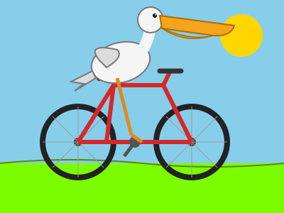 0.09¢ |
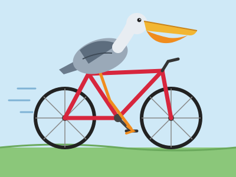 0.14¢, suficiente |
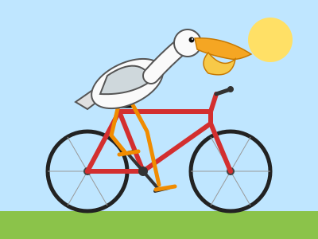 0.25¢ |
| Sonnet 5.5 | 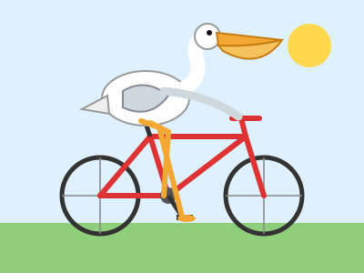 1.63¢ |
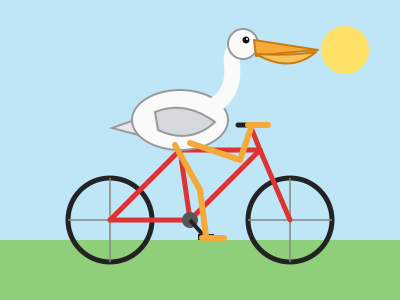 1.80¢, suficiente |
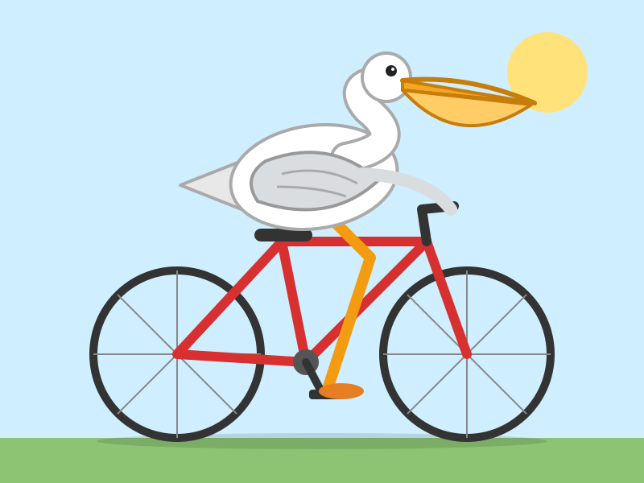 2.34¢ |
| Opus 5.5 | 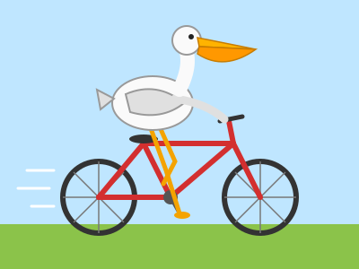 3.79¢ |
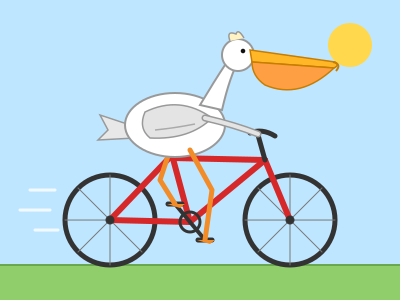 5.89¢ |
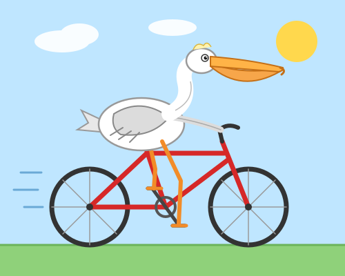 6.74¢ |
| Fable 5.1 | 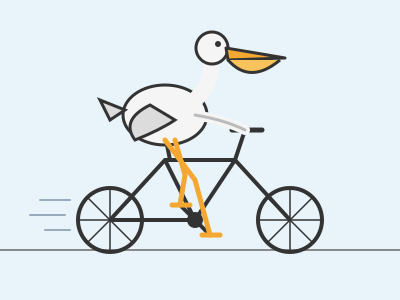 10.02¢ |
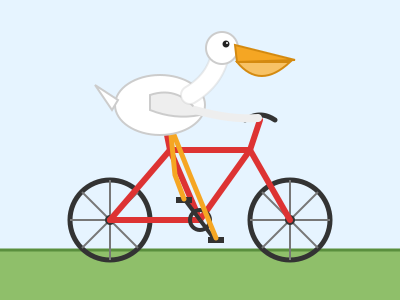 9.91¢ |
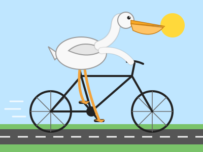 13.09¢ |
Lee la cuadrícula en dos direcciones. Hacia abajo, el modelo crece y sube el precio por token, así que los costos van de fracciones de centavo a más de diez centavos. De izquierda a derecha, sube el esfuerzo: el modelo razona más y escribe más, así que el costo suele subir mientras el dibujo gana detalles en lugar de volverse correcto. Haiku con esfuerzo bajo tiene el cuadro más débil; de esfuerzo medio para arriba, los cuadros son sólidos, lo que concuerda con el consejo del libro de usar esfuerzo medio, aunque no lo demuestra.
Mantén la evidencia en proporción. Es una ejecución por celda de una tarea pequeña y autónoma, no un benchmark: si lo vuelves a ejecutar obtienes otros pájaros, y Fable con esfuerzo medio incluso costó menos que Fable con esfuerzo bajo. Más esfuerzo tampoco es siempre mejor: con su esfuerzo máximo, Sonnet 5.5 y Opus 5.5 gastaron cada uno 128,000 tokens razonando, el límite de salida de los modelos, y no devolvieron ningún dibujo (transcripciones de Simon Willison, consultadas el 2026-11-12). Un dibujo dice poco de un trabajo largo que une conjuntos de datos y se recupera de errores, que es donde los modelos más fuertes se ganan su precio. Si una diferencia de 93 veces en el precio vale la pena depende por completo de la tarea.
2.3 Cuánto cuesta una conversación
Pagues por suscripción o por API, el uso se cuenta en tokens. Tres cosas suben el costo de una sesión:
- Un modelo más grande cuesta más por token.
- Un nivel de esfuerzo más alto hace que el modelo escriba más tokens de razonamiento por respuesta.
- Una conversación más larga cuesta más en cada turno, porque el modelo no guarda memoria entre solicitudes: el harness vuelve a enviar la conversación entera cada vez. Todo lo que se envía con una solicitud (la conversación hasta ahí, los archivos leídos, las reglas del proyecto) es el contexto del modelo. El caché de prompts abarata la parte repetida, pero no la hace gratis, y los cachés vencen.
Los hábitos que siguen son simples: un modelo mediano con esfuerzo moderado, una tarea por conversación y una conversación nueva en cuanto termina una tarea. Tres comandos, que se escriben en el propio agente y no se ejecutan en la terminal (Sección 3.4.1), los cubren:
/ solo para ver la lista de comandos de tu agente.
| Comando | Claude Code | Codex | Úsalo cuando |
|---|---|---|---|
/model |
cambia el modelo; las flechas ajustan el nivel de esfuerzo si el modelo lo admite | elige el modelo y el esfuerzo de razonamiento | un prompt sigue fallando (sube) o el trabajo es rutinario (baja) |
/clear |
empieza una conversación nueva con el contexto vacío; la anterior se puede retomar | limpia la terminal y empieza un chat nuevo | terminó una tarea y empieza otra sin relación |
/exit |
sale; /quit hace lo mismo |
sale; /quit hace lo mismo |
terminaste, o necesitas pasar a otra carpeta |
/clear importa tanto para la calidad como para el costo. Las instrucciones viejas y los archivos leídos antes siguen orientando al modelo mientras estén en la conversación; una conversación nueva los descarta. Nada cambia en el disco, y el archivo de reglas del proyecto se vuelve a leer.
Una tarea terminó y empieza otra sin relación. ¿Qué comando va primero y qué conserva?
/clear. La tarea nueva no necesita nada de la conversación anterior, y arrastrarla cuesta tokens en cada turno y puede confundir al modelo. Tus archivos quedan como están, y el archivo de reglas del proyecto se vuelve a leer.
2.4 La carpeta raíz es el mundo del agente
Un agente trata la carpeta en la que lo inicias como su raíz: lee y edita archivos ahí y en las carpetas de abajo, y ejecuta comandos desde ahí. La primera vez que inicias uno en una carpeta nueva, te pregunta si confías en ella. El aviso de Claude Code, capturado el 2026-11-07, advierte que “Claude Code’ll be able to read, edit, and execute files here” (Claude Code podrá leer, editar y ejecutar archivos aquí); Codex hace la misma pregunta en una carpeta que es un repositorio de Git, y dice que puede leer, editar y ejecutar archivos “subject to your permission settings” (según tu configuración de permisos).
Esa pregunta merece una respuesta de verdad. Confía solo en una carpeta que creaste para el trabajo. Nunca inicies un agente en tu carpeta personal, en Documentos ni en ningún lugar que contenga proyectos de otras personas, documentos privados o claves (como ~/.ssh). Las instrucciones de proyecto de una carpeta de confianza también se leen y se siguen, lo que es otra razón para confiar solo en tus propias carpetas.
Empezar en una carpeta de proyecto pequeña tiene tres ventajas prácticas. Las rutas de los prompts quedan cortas (data/attractions.csv), se encuentra el archivo de reglas del proyecto y un error queda dentro de una sola carpeta que puedes restaurar. Pero no es una frontera garantizada: un comando igual puede nombrar una ruta fuera de la carpeta, así que lee cada comando antes de aprobarlo.
Dos agentes que escriben los mismos archivos, o que renderizan en una misma carpeta a la vez, chocan; la Sección 6.2 muestra la forma segura de repartir el trabajo. Para trabajar en otro proyecto, sal con /exit, cambia de carpeta e inicia el agente otra vez ahí.
2.5 Reglas que perduran: AGENTS.md
Todo lo que le dices a un agente en la conversación se olvida cuando la conversación termina. Las reglas que deben valer en cada sesión van en un archivo: AGENTS.md, un archivo de Markdown simple en la parte de arriba de la carpeta del proyecto que el agente lee al comienzo de cada sesión. Uno bueno tiene tres partes:
- Alcance: qué es el proyecto y qué no es.
- Reglas: lo que siempre debe cumplirse (“every number comes from a cited file in
data/”: cada número sale de un archivo citado endata/). - Comandos: cómo construir y revisar el proyecto.
Los tres agentes de este libro lo leen (consultado el 2026-10-30). Codex lee los archivos AGENTS.md antes de hacer cualquier trabajo. Antigravity lee AGENTS.md o GEMINI.md en las carpetas del proyecto. Claude Code lee AGENTS.md cuando no hay un CLAUDE.md en la carpeta de trabajo ni más arriba, desde la versión 2.1.277; un CLAUDE.md que contenga la línea @AGENTS.md lo importa, así que un solo archivo puede servirles a los tres (documentación de memoria de Claude Code, consultada el 2026-11-12). El repositorio detrás de este libro funciona exactamente así: su CLAUDE.md importa su AGENTS.md.
AGENTS.md es contexto, no una imposición. El agente lee las reglas y suele seguirlas, pero igual puede equivocarse. Escribe reglas lo bastante concretas como para revisarlas (“call ALVA counts ‘ALVA member attractions’”: llama a los conteos de ALVA “ALVA member attractions”), y revísalas.
Ayer le dijiste al agente, en la conversación, que dijera “ALVA member attractions”. Hoy escribe “top attractions”. ¿Por qué, y cuál es el arreglo duradero?
La instrucción terminó con la conversación de ayer: el modelo no guarda memoria entre sesiones. Pon la regla en AGENTS.md, que se lee al comienzo de cada sesión, y aun así revisa que se cumpla, porque las reglas son contexto, no una imposición.
La Parte II escribe las reglas de la guía de Londres en el Capítulo 4, y la Parte III escribe las del análisis del agua en el Capítulo 8.
2.6 Cómo pedir trabajo
Un prompt es la solicitud que le escribes al agente. Cuatro hábitos hacen que los prompts sean confiables:
Especifica. Nombra los archivos, las columnas, el tipo de gráfico y la salida. “Haz un gráfico” invita a adivinar; “agrega un gráfico de barras horizontales de visits_2025 por attraction desde data/attractions.csv”, no.
Un paso a la vez. Una tarea por prompt mantiene cada cambio lo bastante pequeño como para revisarlo, y te dice qué paso se rompió cuando algo se rompe.
Pídele que ejecute y compruebe. Termina con una comprobación que el agente pueda hacer: “renderízalo y dime qué archivo escribió”, “comprueba que el PDF tenga una página”. Un agente que verifica su propio trabajo detecta muchos de sus propios errores.
Revisa lo que cambió. La responsabilidad por el resultado es tuya. Lee los archivos que cambiaron (la mayoría de los agentes pueden mostrarte un diff, las líneas agregadas y eliminadas) antes de seguir.
Los prompts de este libro se diseñaron con ayuda de IA y se afinaron para reducir errores, pero no son magia, y los agentes varían. Cuando un prompt menciona algo que no entiendes (una clave de YAML, una construcción de Markdown, una llamada de Python), pregunta antes de pegarlo:
Explica qué es una tabla de Markdown y cuándo conviene usarla. Luego dime qué página de la documentación oficial puedo consultar para verificar tu respuesta.Pedir la página de la documentación importa: convierte la respuesta en algo que puedes revisar.
2.6.1 Un chat web puede redactar tu prompt
Si sabes lo que quieres pero no cómo pedirlo, un chat web gratuito (Claude, ChatGPT o Gemini en el navegador) puede convertir una idea a medias en un prompt. Describe el objetivo con palabras simples, nombra tus herramientas y pide un prompt de una a cuatro líneas, con una sola tarea, nombres de archivo concretos y una comprobación (Figura 2.3). El chat no puede ver tus archivos, así que adivina; el agente sí puede verlos, así que comprueba. Lee el prompt redactado antes de pegarlo, y corrige cualquier nombre de archivo que no coincida con tu carpeta.
![Un ejemplo animado en cinco pasos, en inglés. Un chat web gratuito recibe una solicitud escrita con palabras simples: una guía de una página para visitantes de Londres, y un prompt para un agente de programación, que nombre las herramientas Quarto y Markdown, de una a cuatro líneas, con una sola tarea, nombres de archivo concretos y una comprobación. El chat responde con un prompt: usa Quarto y Markdown, crea london.md con el título Visit London, un título de nivel 1 y una bienvenida de dos oraciones, agrega un título Top sights con tres viñetas que nombren cada una un lugar y por qué visitarlo, ejecuta quarto render london.md y luego enumera los títulos de london.html y cualquier error. El prompt se copia y se pega en un agente de programación en la terminal, que escribe london.md, lo renderiza, enumera los títulos e informa que no hay errores.](../media/stills/chat-prompt.png)
Pega solo lo que publicarías sin problema. Los chats web y los agentes le envían tu texto al proveedor: nada de contraseñas, claves, datos sin publicar ni información personal.
2.7 Cómo leer los recuadros del agente
Cada paso práctico de este libro usa el mismo recuadro de tres partes. Esta es una versión más simple del primero que vas a encontrar en la Parte II:
Crea london.md con un título de nivel 1 "Visit London" y un párrafo de bienvenida.escribe london.md · puede ejecutar quarto render london.md
apruebas sus comandos · abres london.html en tu navegador
Pídele a tu agente contiene el prompt exacto que debes pegar en el agente (en la edición HTML, con un botón para copiarlo). Probablemente ejecute enumera lo que el agente probablemente hará, para que lo reconozcas cuando te pida aprobación; esto no lo escribes tú. Tú haces enumera las pocas cosas que solo tú puedes hacer: iniciar el agente, iniciar sesión en las cuentas, aprobar comandos, ejecutar una vista previa en vivo, abrir los resultados. El agente ocupa la pestaña de la terminal en la que corre, así que los comandos de un recuadro Tú haces van en una segunda pestaña de la terminal abierta en la misma carpeta (Sección 3.4.1).
Juntos, los recuadros son una vuelta del ciclo del título del libro. Pídele a tu agente es el paso Pide. Probablemente ejecute y Tú haces son donde revisas: reconoces cada comando antes de aprobarlo y abres el resultado por tu cuenta. El renderizado es el paso Publica. Cada ejercicio cierra el ciclo con Terminaste cuando: la comprobación, escrita de manera que puedas ver si se cumplió.
Aprobar un comando sin leerlo. La mayoría de los comandos de este libro ejecutan una herramienta que nombró el prompt (quarto, uv, git, gh) sobre archivos de la carpeta del proyecto. Detente y pregúntale al agente qué hace un comando antes de aprobar uno que borre archivos (rm), que se ejecute como administrador (sudo) o que toque una carpeta fuera del proyecto que el prompt no nombró.
Los prompts son ejemplos, no transcripciones. Los agentes varían de una versión a otra y de una ejecución a otra, así que los archivos que escriban van a diferir en detalles de los que se muestran. Lo que no debería variar es el resultado que revisas. La Figura 2.4 muestra cómo se ve una sesión.
![La reproducción en una terminal de una sesión con un agente de programación, en inglés y marcada como ilustración. El prompt pide london.md con un título de nivel 1 Visit London y un párrafo de bienvenida. El agente dice que va a crear el archivo y muestra las líneas que escribe: el título y una oración de bienvenida sobre museos gratuitos, historia de la realeza y paseos junto al río. Dice que va a renderizar el archivo para comprobarlo, muestra el comando quarto render london.md y pregunta Allow this command (permitir este comando), con Yes seleccionado. La salida dice Output created: london.html, y el agente informa que london.md tiene el título y un párrafo de bienvenida y que el renderizado no tuvo errores.](../media/stills/agent-session.png)
2.8 Usar IA en una investigación: decláralo y hazte cargo
Si tu trabajo es de investigación, usar un agente trae obligaciones que van más allá de que el código esté bien. Las revistas y los financiadores difieren en los detalles, así que lee la política de tu revista, pero el International Committee of Medical Journal Editors (ICMJE), cuyas recomendaciones siguen muchas revistas, plantea un núcleo común (consultado el 2026-11-12; citas traducidas del inglés):
- Una herramienta de IA nunca es autora. Los chatbots y otras herramientas asistidas por IA “no deben figurar como autores porque no pueden ser responsables de la exactitud, la integridad y la originalidad del trabajo”.
- Tú eres responsable de lo que produjo. Las personas son responsables de cualquier material enviado que haya usado tecnologías asistidas por IA, y deben revisar y editar lo que produce la IA, que “puede ser incorrecto, incompleto o sesgado”. Eso incluye las referencias: el material generado por IA no es una fuente primaria aceptable.
- Declara el uso. Los autores describen su uso de tecnologías asistidas por IA al enviar el trabajo, en la carta de presentación y en la sección correspondiente del trabajo.
Hay dos reglas más que se desprenden de la ética de investigación corriente más que de una política en particular. Mantén los manuscritos sin publicar, los datos de participantes y otro material confidencial fuera de las herramientas públicas de IA. Y nunca dejes que una herramienta genere o altere datos primarios o imágenes: presentar datos generados como observados es fabricación.
Una declaración útil nombra la herramienta y su versión, las tareas que hizo y las comprobaciones que hiciste tú. La declaración de este libro, en su página de derechos de autor, está escrita así. Dónde va depende del uso: el código y el análisis van en los Métodos, con detalle suficiente para reproducirlos, lo que en un proyecto de Quarto significa el código mismo y el AGENTS.md del proyecto.
¿Qué necesita una declaración: corregir una errata o calcular una tabla?
Calcular una tabla es análisis: descríbelo en los Métodos, con detalle suficiente para reproducirlo. Las revistas difieren en si la corrección de estilo necesita una declaración; las recomendaciones del ICMJE no hacen ninguna excepción para ella, así que, ante la duda, decláralo.
Resumen
- El modelo decide, el harness hace, y tú diriges y revisas; cuando un agente decepciona, cualquiera de las dos mitades puede ser la causa.
- Elige un modelo por la tarea, no por el ranking: como mostraron los pelícanos, un modelo más barato con esfuerzo medio suele bastar para un paso pequeño y bien especificado.
- El costo crece con el tamaño del modelo, el esfuerzo y el largo de la conversación, porque la conversación entera se vuelve a enviar en cada turno, así que empieza una conversación nueva para cada tarea sin relación.
- Inicia un agente solo en una carpeta que creaste para el trabajo, y lee cada comando antes de aprobarlo.
- Las reglas que deben durar van en
AGENTS.md, que es contexto, no una imposición, así que escríbelas de forma lo bastante concreta como para revisarlas. - Los buenos prompts son específicos, piden un solo paso y terminan en una comprobación; en una investigación el agente nunca es autor, y su uso se declara.
Todo esto da por sentado una computadora en la que un agente, Quarto y Python están instalados y funcionan juntos. ¿La tuya lo está? El Capítulo 3 la deja así en seis pasos revisados.
Lecturas adicionales
- Claude Code, referencia de comandos y memoria y
AGENTS.md(consultados el 2026-11-12). - OpenAI, Codex CLI y
AGENTS.md(consultados el 2026-11-12 y el 2026-10-30). - Google, reglas de Antigravity (consultado el 2026-10-30).
- Anthropic, panorama de los modelos y precios; OpenAI, modelos (consultados el 2026-11-12).
- Planes gratuitos de los chats web: Claude, ChatGPT y Gemini (consultados el 2026-11-12).
- Gemini CLI, instalación, sobre su reemplazo por Antigravity CLI (consultado el 2026-11-12).
- Guido Appenzeller, LLMflation, a16z, 2024; Epoch AI, LLM inference price trends, 2025 (consultados el 2026-11-07).
- Simon Willison, serie pelican riding a bicycle (consultada el 2026-11-06).
- ICMJE, Use of AI by authors (consultado el 2026-11-12).